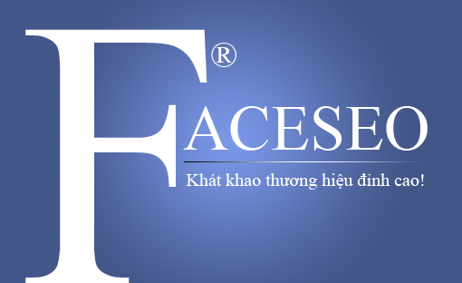

Khi Google liên tục thay đổi thuật toán thì các công ty dịch vụ seo cũng liên tục thay đổi công nghệ và cách làm để duy trì thứ hạng website.
Tuy nhiên sau nhiều năm nghiên cứu và SEO nhiều từ khóa KHÓ lên top Google, Linh Nguyễn nhận thấy chỉ có SỰ TƯƠNG TÁC THỰC mới đem lại hiệu quả bền vững.
Chính vì thế FACESEO một hệ thống như ý nguyện của SEOER hình thành và được sự hưởng ứng mạnh mẽ của các công ty dịch vụ seo và SEOER.
A)Những đánh giá của người dùng về hệ thống FACESEO:
- Kết hợp với backlink đẩy từ khóa lên TOP Google nhanh
- Giảm Alexa rất tốt cho website
- Tăng cường traffic chất cho website
- Giảm boundrate
- Tự tạo Google Searchbox (trẻ em vẫn làm được)
- Tăng like facebook, G+ đều
- Tập trung lượng lớn click vào keywords cần SEO
B)Các tính năng của FACESEO:
- View link tối thiểu 5p +5->10Đ
- Click textlink chuyển trang mới và view đủ 3p + 50Đ
- Like + 10đ, G+ + 15đ
- Share FB + 50 đ, Share G+ +30đ
C)Tính năng vượt trội:
Chỉ click link FACESEO canh đủ 5p sẽ tự tắt
Người dùng tự thiết lập thời gian view phù hợp với độ dài trang
D)Hướng dẫn sử dụng tính năng FACESEO:
CÀI ĐẶT ADDON FIREFOX ĐỂ ADDON QUẢN LÝ CLICK TEXTLINK
FACESEO là hệ thống tương tác thực vì vậy càng đông người dùng thì hiệu quả càng cao. Mọi người share bài viết này trên cộng đồng FB đó là cách nhanh nhất để nhiều người dùng FS.
Chúng tôi sẽ tổ chức nhiều buổi training cho các anh chị cách sử dụng đúng và làm sao kết hợp với các yếu tố khác đạt hiệu quả cao nhất.
Cuối cùng xin cảm ơn các anh/chị đã sử dụng hệ thống.
A)Những đánh giá của người dùng về hệ thống FACESEO:
- Kết hợp với backlink đẩy từ khóa lên TOP Google nhanh
- Giảm Alexa rất tốt cho website
- Tăng cường traffic chất cho website
- Giảm boundrate
- Tự tạo Google Searchbox (trẻ em vẫn làm được)
- Tăng like facebook, G+ đều
- Tập trung lượng lớn click vào keywords cần SEO
B)Các tính năng của FACESEO:
- View link tối thiểu 5p +5->10Đ
- Click textlink chuyển trang mới và view đủ 3p + 50Đ
- Like + 10đ, G+ + 15đ
- Share FB + 50 đ, Share G+ +30đ
C)Tính năng vượt trội:
Chỉ click link FACESEO canh đủ 5p sẽ tự tắt
Người dùng tự thiết lập thời gian view phù hợp với độ dài trang
D)Hướng dẫn sử dụng tính năng FACESEO:
- Đóng trình duyệt
- Mở FACESEO.VN tại tab đầu tiên
- Click Button "Connect with FB"
- Đăng nhập Email+Pass khi FB phá sản
- Giao diện trang chủ FB
- Sử dụng CHUỘT TRÁI click vào 20link. FACESEO sẽ mở 20 tab mới.
- Click vào hình con mắt dưới mỗi post để xem thống kê click của post có tên mình chưa
- Chờ đợi 10phút hưởng thành quả. Sau 10p 20tab sẽ tự động đóng. Nếu bạn rãnh thì canh đủ 5p rồi tắt còn không thì để FACESEO lo điều này
CÀI ĐẶT ADDON FIREFOX ĐỂ ADDON QUẢN LÝ CLICK TEXTLINK
- Click vào link
- Xem link đó cần click vào key nào.
Ví dụ http://giaiphapthuonghieu.vn ###đào tạo seo!!! ###350s*** tức là TÔI cần click key "ĐÀO TẠO SEO" 350s là thời gian view link http://giaiphapthuonghieu.vn - Khi link cha view gần hết giờ sẽ xuất hiện thông báo
- Click vào những link gần hết giờ -> chuyển đến tab đang view -> click key "ĐÀO TẠO SEO"
- Click con mắt xem hệ thống đã thống kê tên bạn và keywords đã click
- Nếu hệ thống không thống kê thì nên tắt các tab khởi động lại FIREFOX và mở FACESEO đầu tiên
FACESEO là hệ thống tương tác thực vì vậy càng đông người dùng thì hiệu quả càng cao. Mọi người share bài viết này trên cộng đồng FB đó là cách nhanh nhất để nhiều người dùng FS.
Chúng tôi sẽ tổ chức nhiều buổi training cho các anh chị cách sử dụng đúng và làm sao kết hợp với các yếu tố khác đạt hiệu quả cao nhất.
Cuối cùng xin cảm ơn các anh/chị đã sử dụng hệ thống.